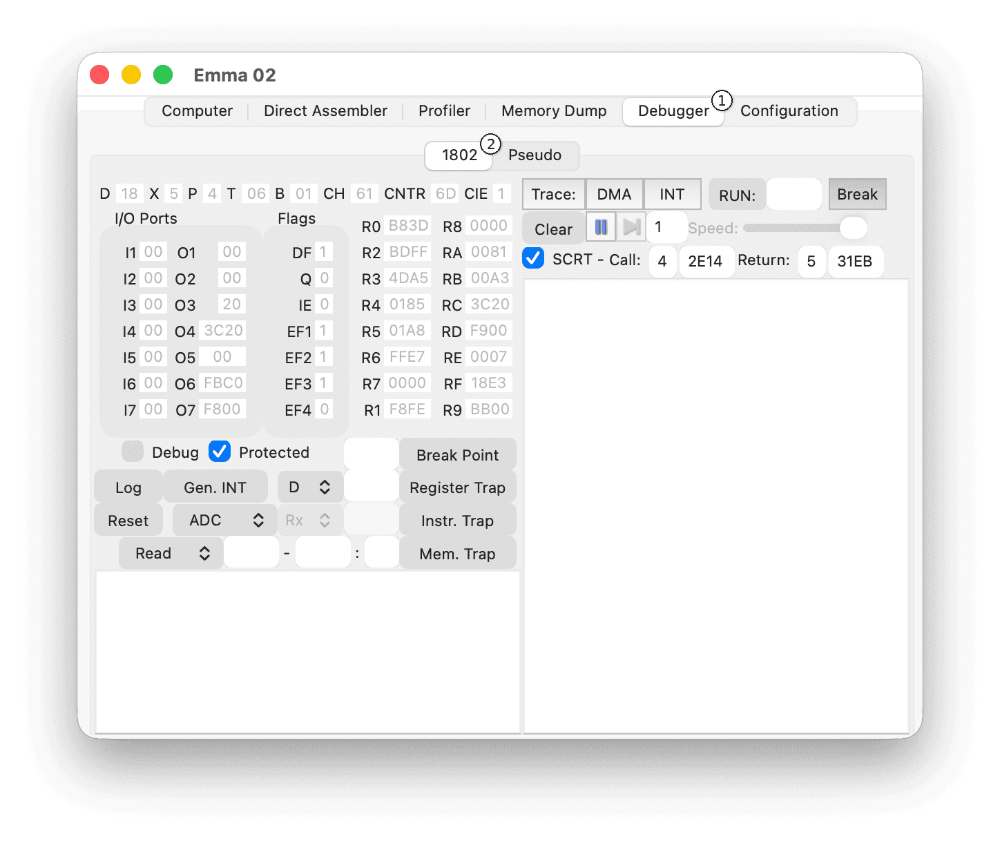
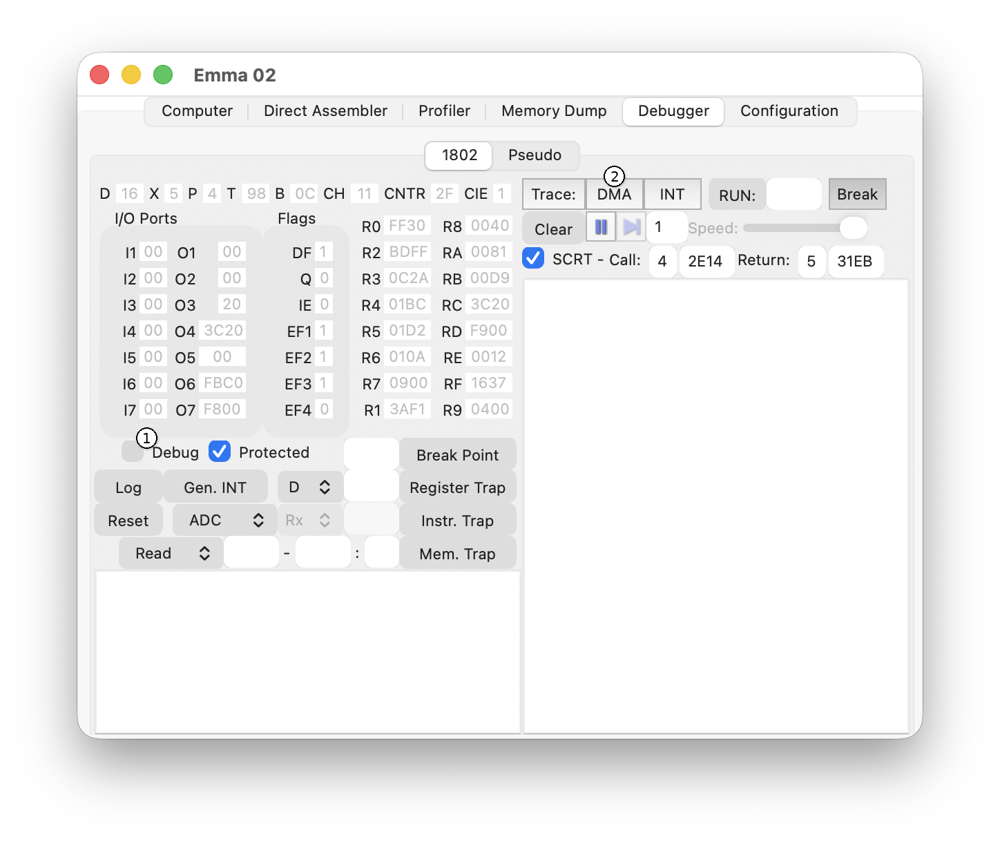
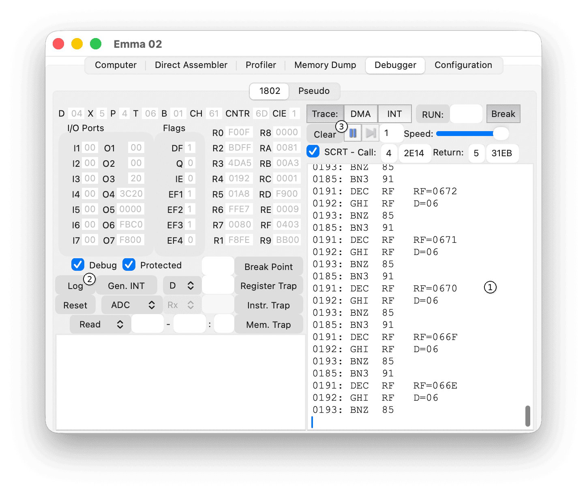
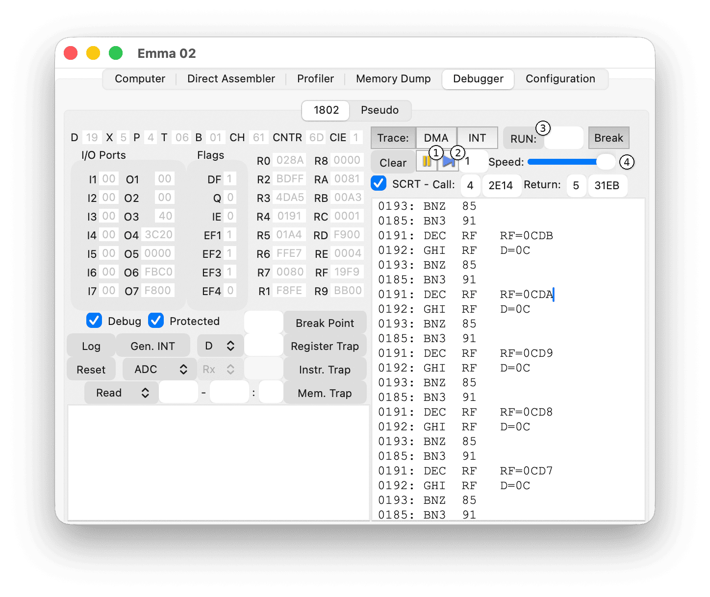
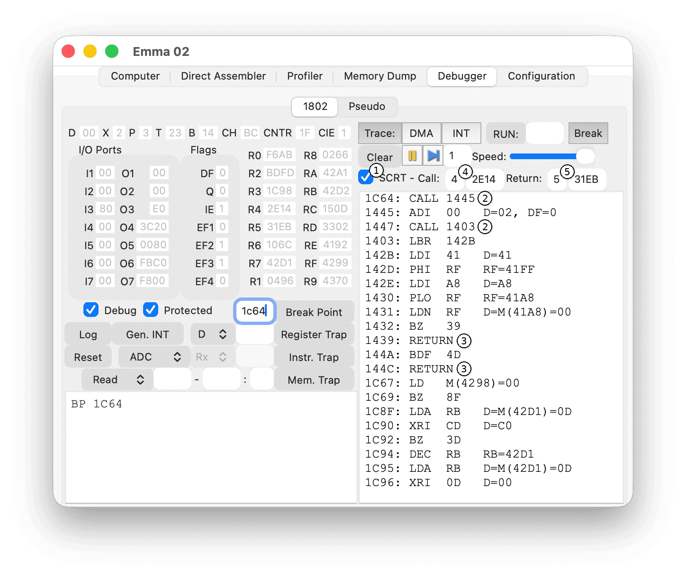
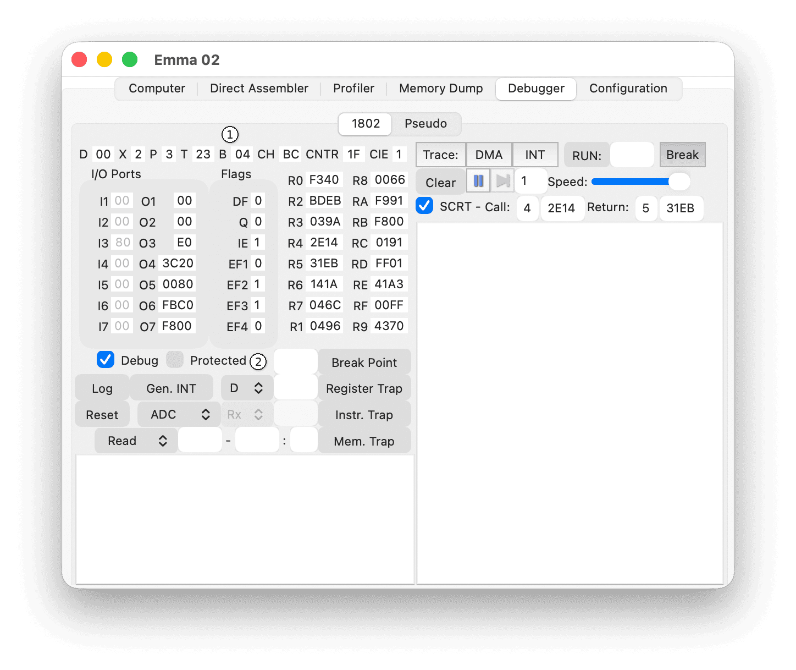
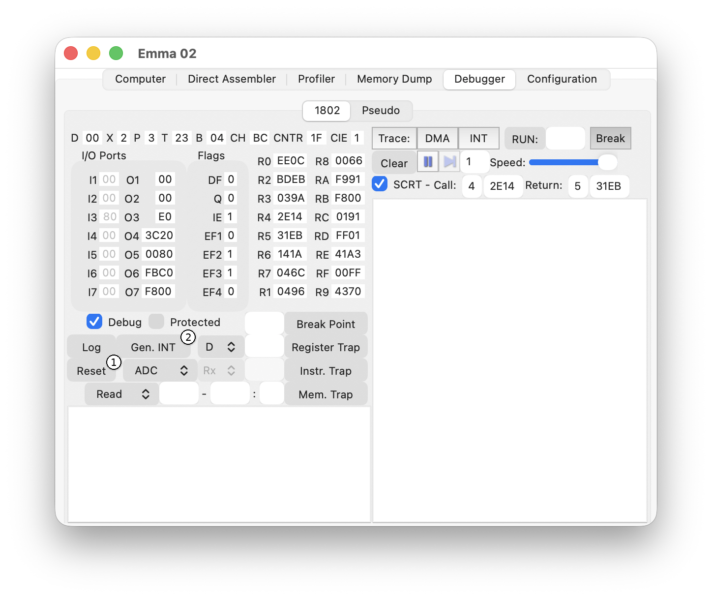
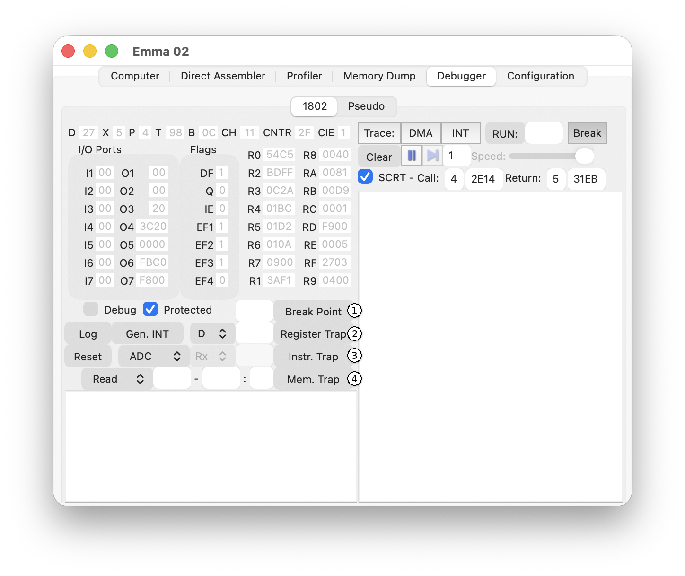
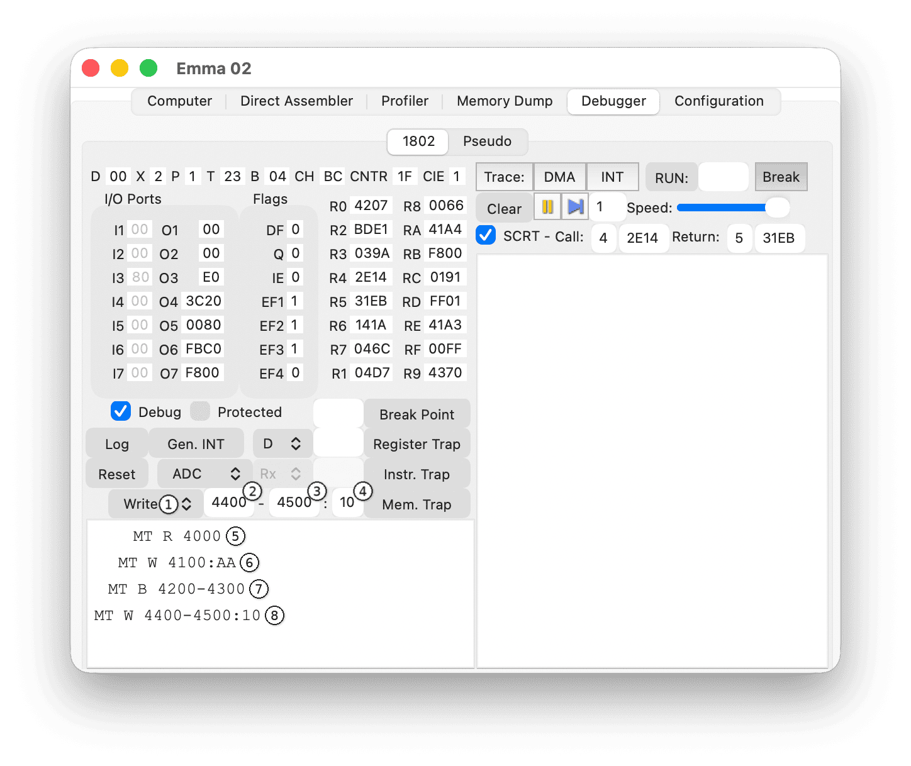

The 1802 Debugger allows tracing and control of RCA 1802 machine code.
The main elements of the 1802 Debugger are shown in the screenshot below.

To open this tab, select the Debugger tab (1) and then the 1802 sub-tab (2).
Debug mode enables instruction tracing and debugging controls.

Enable debug mode using the Debug checkbox (1). Using the Trace, DMA, or INT buttons (2) also activates debug mode. Press F6 in the emulated computer window to toggle debug mode.
When debug mode is active, this is indicated in the title of the emulated computer window.
Note: Debug mode slows the emulator and increases host CPU usage.
The Trace section controls instruction tracing and stepping through program execution.
The tracing controls are shown in the screenshot below.
Note: Press DMA twice to switch to D-MT (DMA Memory Traps), which shows DMA memory access when Memory Traps are enabled (see the Breakpoints and Traps section below).
Trace output appears in the trace window (1) shown below.

Execution control buttons are shown in the screenshot below.

When program execution is paused, this is indicated in the title of the emulated computer window.
SCRT (Standard Call and Return Technique) control buttons are shown in the screenshot below.

Tracing inside SCRT routines can be hidden using the SCRT checkbox (1).
When enabled:
Tracing inside the CALL/RETURN handler code is suppressed.
If defined in the emulator XML configuration file, CALL and RETURN registers and addresses are set automatically at startup. These can be changed at runtime using the Call: (4) and Return: (5) fields.
CPU register controls are shown in the screenshot below.

The current values of all registers, flags, and I/O ports are displayed (1).
The Protected checkbox (2) is enabled by default, preventing value edits that could crash the emulator. To edit values (except input ports), uncheck Protected (2).
To change a value, type the new value and press ENTER. Changes apply only after pressing ENTER. Pause the emulator before editing values to avoid unexpected behaviour.
Note: Some outputs may be 8- or 16-bit depending on the hardware. For example, when using the CDP1870, outputs 4-7 use a 16-bit address instead of the 8-bit data bus.
CPU action buttons are shown in the screenshot below.

Click Reset (1) to reset the emulated computer.
Click Gen. INT (2) to manually generate an interrupt. This only works if interrupts are enabled (IE = 1).
Breakpoints and traps allow execution to pause automatically when a specified address or condition is reached.

Enter an execution address in the Breakpoint field and press ENTER or the Break Point button. When execution reaches this address, the emulator pauses.
Select a register and value, then press Register trap. Execution pauses when the register reaches that value.
Select an instruction and press Instruction trap. Execution pauses when that instruction executes.
Traps can also be set on instruction ranges using wildcards:
Example: BZ X traps all BZ instructions.
Memory traps allow monitoring of memory access during program execution.
The debugger can trap:
The screenshot below shows the memory trap controls.

All memory traps are defined using the same format: up to two addresses and an optional value. The debugger interprets the trap based on which fields are populated.
First choose the access type (1):
Then enter addresses and (optionally) a value using these rules:
Leave unused address fields empty.
When a matching memory access occurs, the emulator pauses automatically and enters debug mode.
Note: Use memory traps to find where a variable changes unexpectedly, detect writes to protected memory, or discover which code reads an input buffer.
Examples shown in the image above:
To show all occurrences of a breakpoint or trap without pausing execution, clear the Break checkbox.
Select a breakpoint or trap in the list and press the DELETE key to remove it.
(Windows only) Uncheck a breakpoint or trap checkbox to deactivate it. Check it again to reactivate.
Select a breakpoint or trap in the list and edit the text directly to modify it.